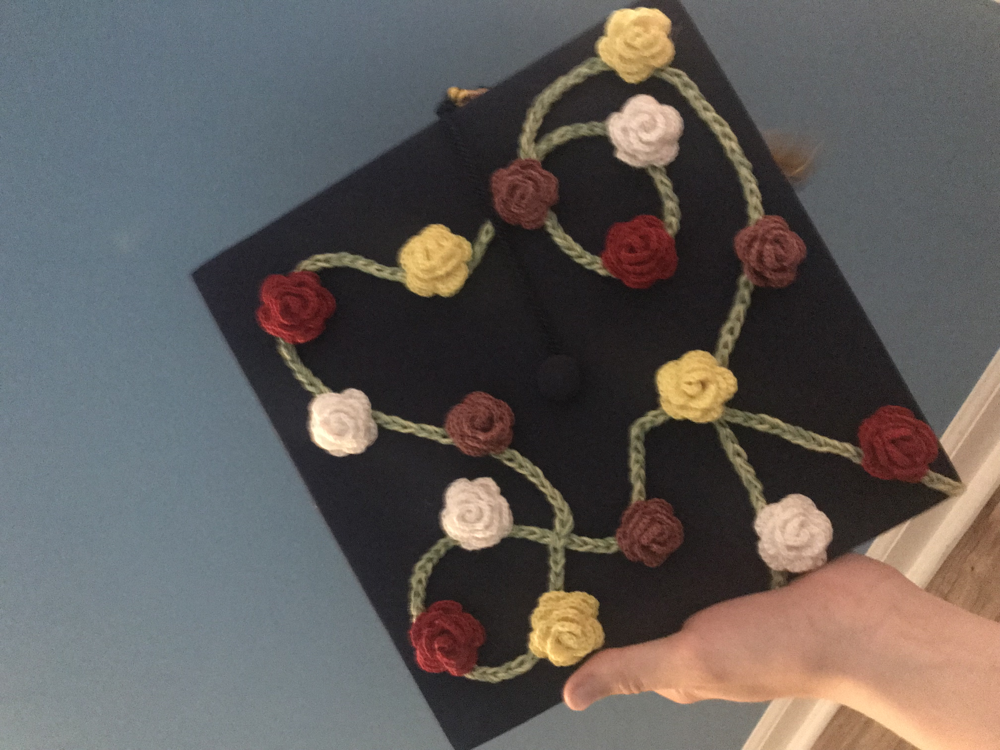

This pattern is using sock yarn which is almost like a thread and that is why the roses are so small.
If you use normal size yarn then it will be bigger, about the size of the rose for the tank top pattern
on my page.

Materials: Any color of yarn, crochet hook, skissors, optonal: glue gun.
Notes: The size of the yarn really does depend on what you want to do. If you use
normal size yarn then the rose will be about the size of your wrist. I used a glue gun when
putting together the roses because i was going to glue them to the grad cap anyway, but
sewing them is not a bad idea either. You just have to make sure you leave enough string
to sew it together.
Please do not copy this pattern, sell this pattern, or call it your own. You can make it yourself and sell it
or reference the website. If you have any questions, please feel free to contact me.